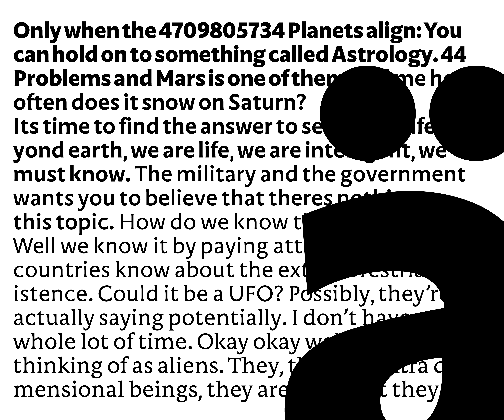
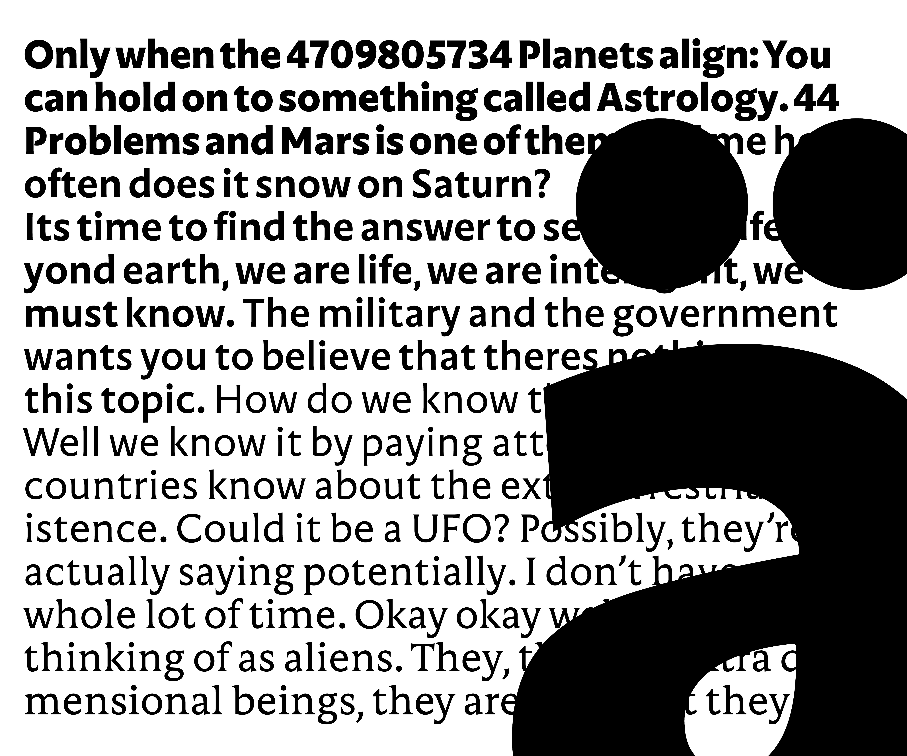

Aludra
The goal of designing Aludra is to learn more about the workflow and systematic organisation of a variable design space. Finding the right balance in different proportions, shapes and rhythms was a very crucial part of his final project. Starting with a large amount of calligraphy and later drawings, Sam tried to find the word image that had the right balance in proportion of the letters. He started drawing on top of the chosen word to find the right feel and character of the typeface. Quickly he realised that just a sans would not satisfy his hunger. So inspired by typefaces like Albertus, he explored the possibilities of a more flared and serifed style.
Sam Van Vaerenbergh
Sam Van Vaerenbergh is a type and graphic designer from Lennik, Belgium. In the summer of 2021 he gained his master in Graphic Design at LUCA School of Arts. Immediately after graduating from the Graphic Design programme, he moved to The Hague to dive deeper into the wonderful realm of type design.
Overview
 

Process
Aludra is based on the use of the broad nib pen. During the process, mainly through calligraphy, I tried to find the right rhythm and feel of the font. In addition, the variable font aspect came into play. The main thing I took from this is that a variable font can be useful mainly as a tool but not always as an end product. The variable font technology holds you to different rules that can sometimes get in the way of the freedom of certain shapes. Nevertheless, this was a tremendously fun and educational project to work on.